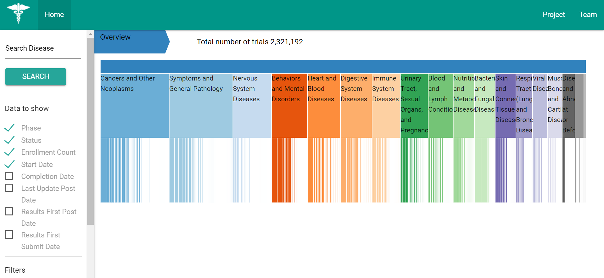
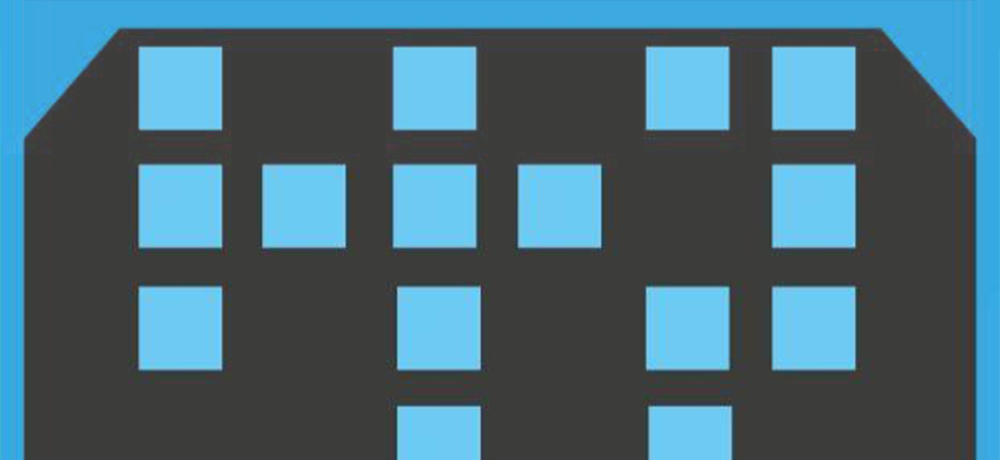
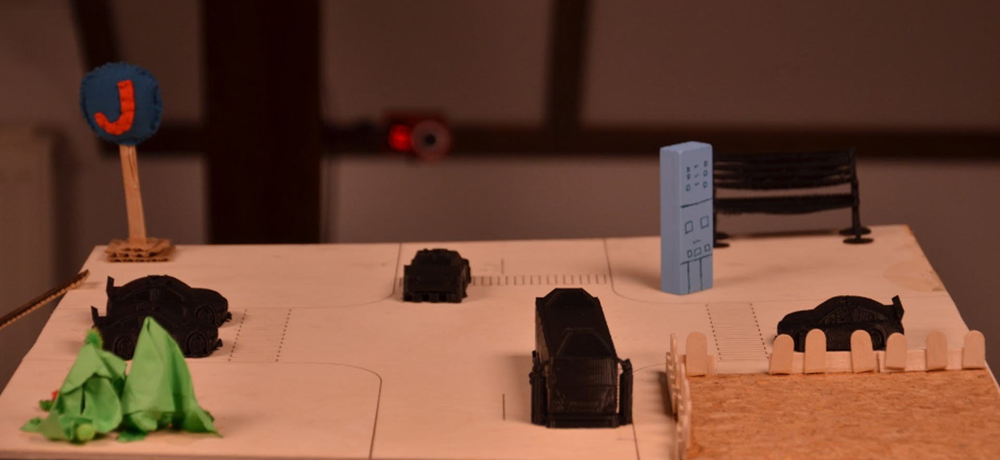

, I'm Federico Landorno!
Interactive Media Technology
Master Student @ KTH
, I'm Federico Landorno!
Interactive Media Technology
Master Student @ KTH
Have a look at my works
, I'm Federico Landorno!
Interactive Media Technology
Master Student @ KTH
Have a look at my works
⌵

Visualization of world clinical trials to understand which ones are most studied and compare them.
Developer: HTML, CSS, JS (jQuery & D3)
Course:
Information Visualization

The Memory card game brought in AR where the user will have to remember sounds and vibrations instead of images.
Developer: Unity, C#, Augmented Reality
Course:
Multimodal Interaction

Design of the soundscape of the future for the metro and the streets of Stockholm.
Interaction and Sound Designer
Course: Sound in Interaction